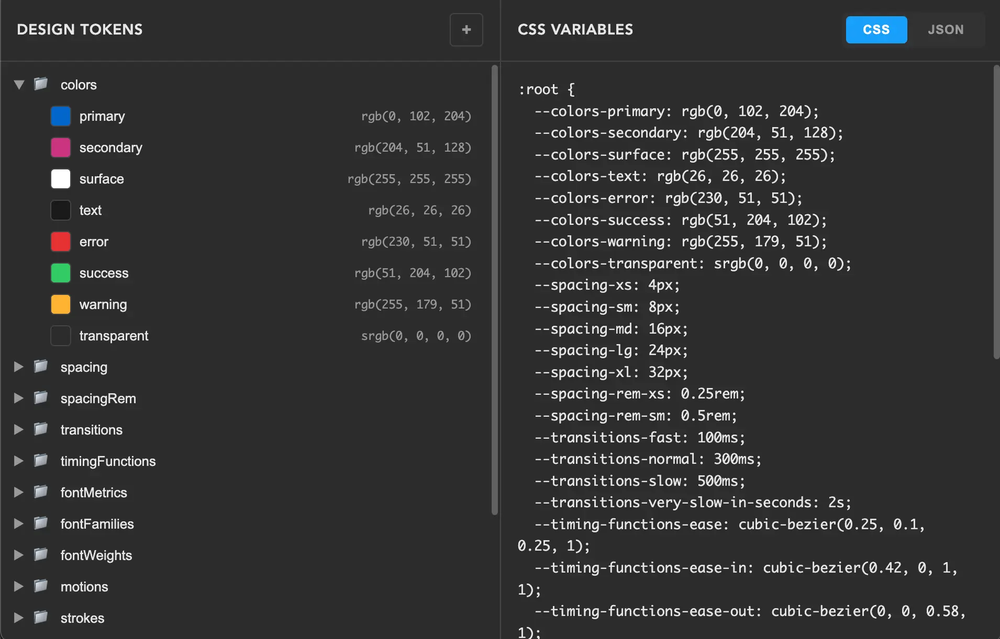
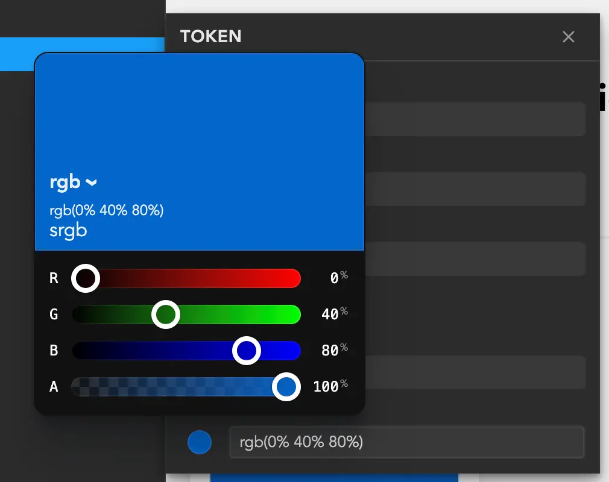
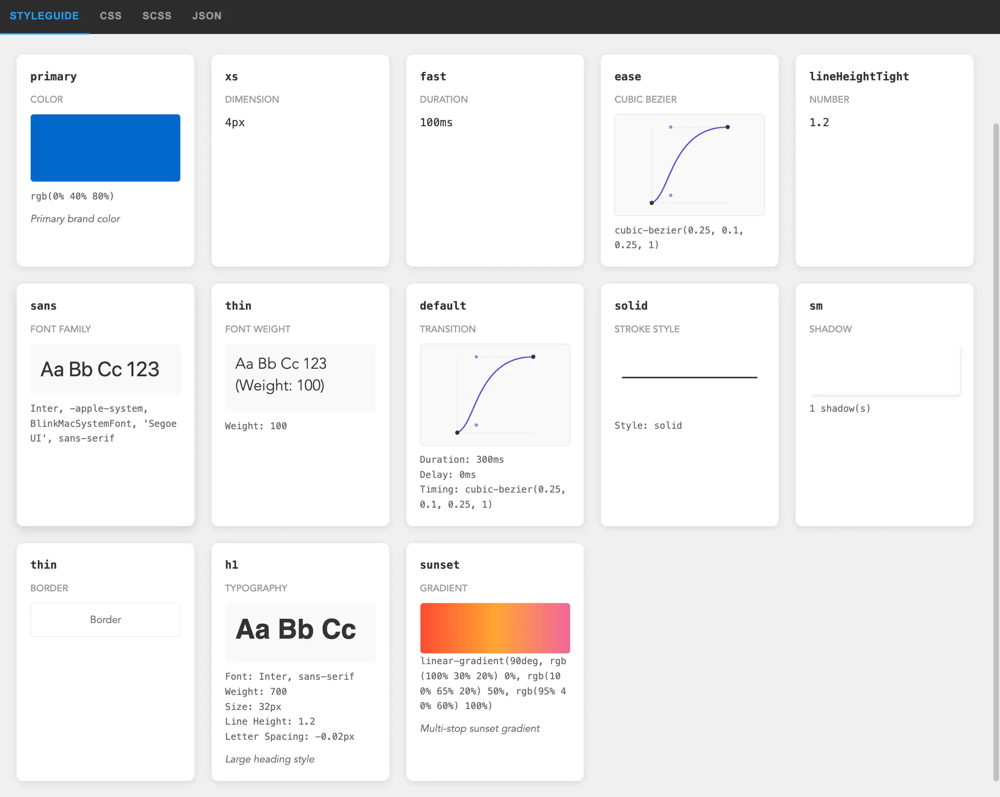

Building design tokens app
I’ve never been great at design systems. Probably because, with a lack of designers on the team, I ended up building component libraries and reusing a few (hundred) style values. When DTCG released a stable design tokens specification, I got very excited and couldn’t stop myself from creating an app around it. It felt like a great opportunity to learn design systems.
I have been building UI for the Web at Webstudio for three years.
Using opencode for rapid prototyping and Svelte as a lightweight framework (already worked with it), I made a simple two-pane UI: a tokens tree on the left and generated CSS variables on the right. AI helps a ton with moving forward from blank pages.
While I was working on the prototype, Adam Argyle released a great new color picker with all modern color spaces supported in CSS. By the way, the design tokens specification relies on those exact color spaces for color tokens. Perfect timing.
color-input uses super cool colorjs.io library, which I had never found before because I was spelling it wrong when searching :)
Then I rebuilt the tree again. I relied heavily on the WAI-ARIA recommendations and Adam Argyle’s advice to always support multi-select. Drag-and-drop is still tricky, especially choosing the right parent to drop into, need to make it more intuitive.
Now we have a token editor and CSS/JSON preview. That’s good for coding but not for visual exploration. We need to generate a style guide from these tokens. I could ask AI to generate style guides, but instead I asked it to generate a style guide generator. And it did. I’m especially happy with the cubic-bezier preview. Would reuse it for bezier editor later.
For UI components, I decided to go with HTML. Yeah, it got a lot of good stuff recently.
- Popover API for the app menu, adding tokens, and the token editor
- The dialog element for “About” info
- Invokers for declarative opening of dialogs and popovers
- Will definitely use interest invokers for tooltips
These are very easy to polyfill, except for anchor positioning, but I worked around that with a custom floating-ui setup.
While researching I read a ton about design systems, especially recommend Brad Frost’s book and articles. That’s where I learned how essential token aliasing is. One great concept is a 3-tier token architecture with arbitrary, semantic, and component values, where each layer maps to the next. The design tokens specification offers a few options for this. One is the “extends” syntax like {{path.to.my.token}} (already supported in this app), another uses JSON Schema refs (which I find tricky to use in a UI).
By the way, I called this tool Engramma. I wanted an original name, so I borrowed it from one of my favorite games and used the Italian variant. You can check it out at engramma.dev.
From the start, the project has been completely open source, and I’m posting progress everywhere Reddit can’t block me (yep, they’re super unfriendly to new users). You can check it out on Github.
What’s next? I’ll keep improving the tool and start using it for new projects. The closest ideas to implement:
- Resolver specification to enable defining tokens for different themes and color schemes
- Synchronize tokens with project code
- Explore connecting with external graphic editors and website builders